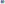
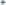
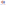
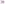
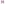
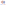
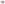

π charge on azulene — red electron-poor (seven-ring), blue electron-rich (five-ring). The dipole azulene is known for, as a field.
The same field as line contours (fill=False) at stated levels. The level at 0 is the charge-neutral curve, and the legend draws rules rather than blocks because no interval of values was filled.
HOMO coefficients of naphthalene (RdBu). The two lobes meet along the nodal line through the fusion carbons, where the coefficient is exactly 0.
The node drawn as a contour: level 0.0 on mono is mid-grey, so it is visible where the diverging map paints it the page colour. Four lobes of alternating sign, nodes along the fusion axis and across it.

Azulene f⁻ (electrophilic attack, HOMO²), viridis, one-sided. Both panels carry the SAME domain 0–0.295, so the two are read against one scale — f⁻ peaks on the five-ring, f⁺ on the seven-ring.

Azulene f⁺ (nucleophilic attack, LUMO²), viridis, one-sided. Both panels carry the SAME domain 0–0.295, so the two are read against one scale — f⁻ peaks on the five-ring, f⁺ on the seven-ring.
Self-polarizability π_ii contoured — and this is the panel that should not be a contour. Range 0.330–0.443 |β|⁻¹: the interior is one flat colour and every band sits in the rim where the interpolation decays to zero.
The same numbers as AtomHalo(encode='both') — radius AND colour per atom. A scalar with no spatial structure is a per-atom quantity, and this form does not invent one. The α positions are the polarizable ones.

clip=None — clip=None — the field's own cutoff closes it.

clip='hull' — hull, drawn through the atoms: bands are sliced.

clip='box' — box over the label boxes.

AtomField + Highlight + ValueLabels, with only the four extreme atoms numbered. The field is dropped to opacity 0.55 so the numbers stay legible on it; the numbers wear the ink colour, never the band colour.

page.legend='none'. The bar is placed outside the content box, so withholding it moves no atom.